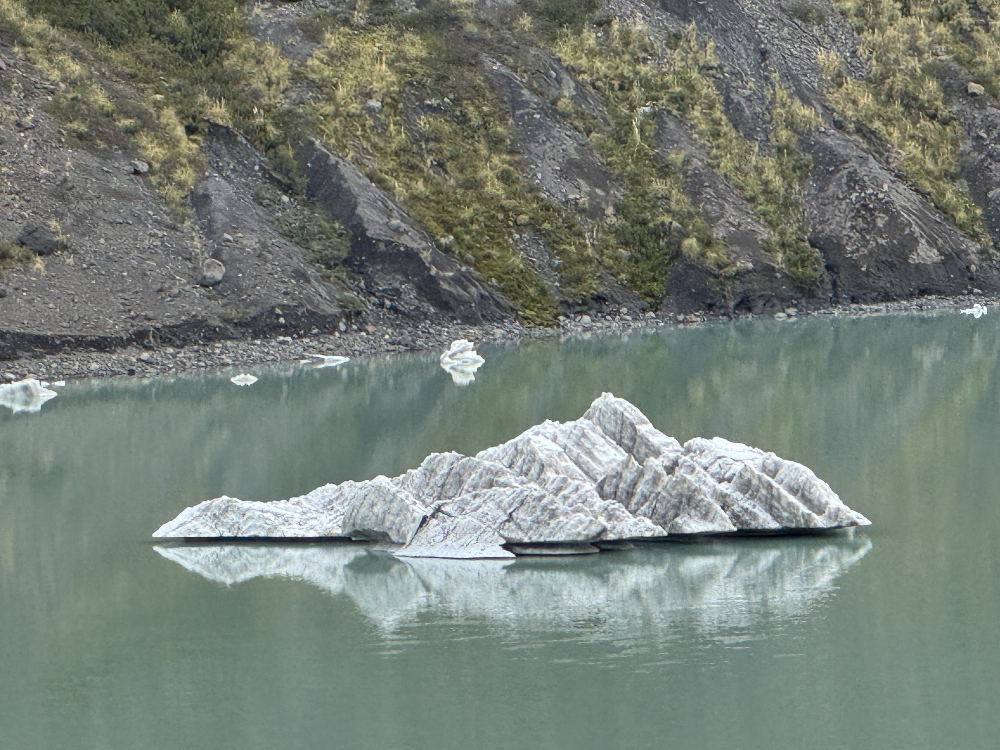

Bariloche

Estos bloques de hielo flotaban cerca del Cerro Tronador.

La vista del Ventisquero Negro fue una de mis favoritas.
Me quedé un rato mirando cómo corría el agua entre las piedras.
Grabé esta cascada durante el recorrido por el Cerro Tronador.